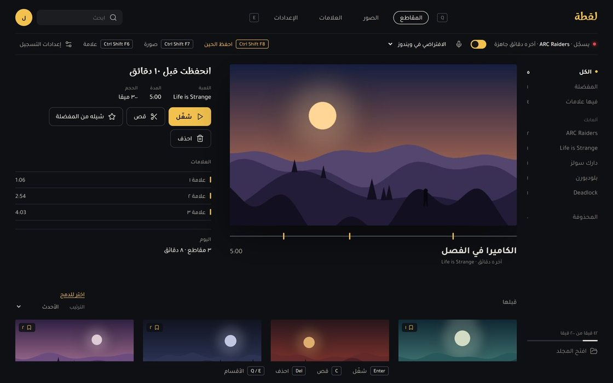
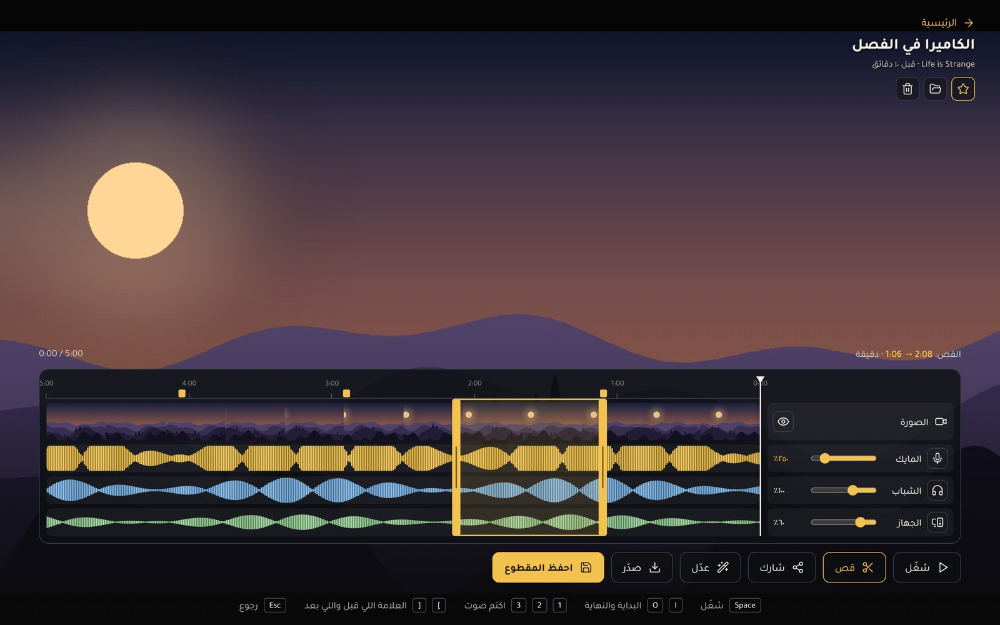
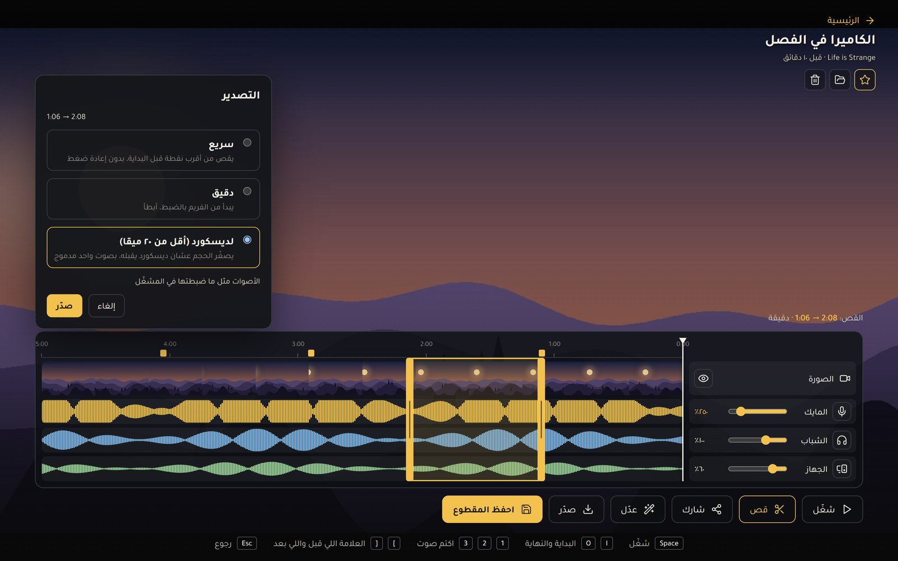

تختار المدة من دقيقة لين ساعة. اضغط Ctrl Shift F8 وانحفظت.
اللحظة الحلوة ما تضيع.
لقطة تسجّل لعبك بهدوء في الخلفية. صار شي يستاهل؟ زر واحد ويحفظ آخر الدقائق، بصوتك وصوت أصحابك وصوت اللعبة كل واحد لحاله.
نزّل لقطة 0.11.2 · 45 MB
مجاني، وبدون إعلانات

وش تسوي لقطة
صوتك، وديسكورد، وصوت اللعبة. كل واحد من ٠٪ لين ٣٠٠٪، وتنقية المايك من الإزعاج.
حط علامة وقت اللعب وارجع لها، واسحب طرفي القص على التايم لاين.
سرّع وبطّئ، قص طولي للجوال، كتابة على الفيديو، ادمج مقاطع، أو احفظ الصوت بس.
صدّر لديسكورد تحت حد الرفع، أو انسخ الملف والصقه في أي محادثة.
يسجّل بكرت الشاشة، وآخر الدقائق على الهارديسك مو في الذاكرة. اللعبة تاخذ جهازك كله.
من داخل البرنامج



ويندوز حذّرك؟
- لقطة جديدة وما عليها توقيع مدفوع للحين، فويندوز يطلع شاشة زرقاء أول مرة.
- اضغط «معلومات إضافية» (More info).
- بعدها «تشغيل على أي حال» (Run anyway)، ويكمل التثبيت عادي.
تحتاج
- ويندوز ١٠ أو ١١، ٦٤ بت
- كرت شاشة فيه مسجّل فيديو (أغلب كروت إنفيديا وإي إم دي وإنتل)
- حساب في لقطة، أو دخول بجوجل